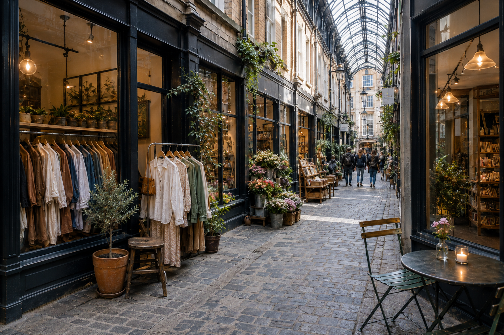

LOCAL
Local is more than a pin on the map.
The environment, local history, and character of a place become part of a business’s identity — and part of how people recognize and remember it.
Local Business Storytelling
Local is more than a pin on the map.
The environment, local history, and character of a place become part of a business’s identity — and part of how people recognize and remember it.
A local business grows through people, relationships, and trust.
Familiarity, shared experience, and a sense of belonging help strengthen both the business and the community around it.
What people feel and remember goes beyond what they bought.
Atmosphere, interaction, and the experience of being there can become just as important as the product or service itself.
A story gives all of this a form people can remember and share.
It brings together the place, the people, and the experience into something distinctive, recognizable, and worth passing on.

Forest City Spotlight · London, Ontario
The project began with a campaign post announcing a new mini-series designed to give London small businesses free exposure through social media video content.
It then became Forest City Spotlight — a dedicated page for showcasing local businesses in London, Ontario.
Filming. Editing. Local business storytelling.
The first Forest City Spotlight story: a family-run restaurant built around culture, community, and authentic Mexican food in London.
Open @forestcityspotlightA London-based apparel brand founded by Drew Weir, filmed on location with Mikhail also appearing as a clothing model.
Open @forestcityspotlightA local confectionery inside Covent Garden Market, presented through its downtown location, atmosphere, and the experience of being there.
Open @forestcityspotlight